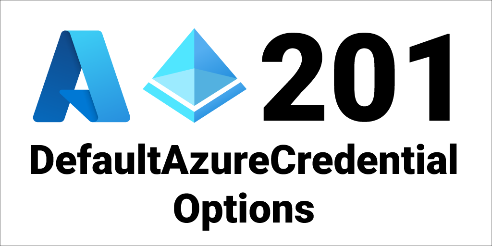

Azure Identity is a fundamental building block of the new Azure SDKs. We wanted to make it brain-dead simple for you to authenticate your apps with Azure. Auth can be very hard to get right. There’s so much context you have to learn about app types, flows, OAuth, tokens, scopes, etc - we wanted to abstract all of that away so you can get back to building your apps. In Azure Identity 101, I introduced the DefaultAzureCredential type that you can simply new up and pass to your clients. It works in your local dev environment as well as production without code changes. Please go ahead and read that blog for more info on all the options there.
Here’s a snippet of what the simplest version of DefaultAzureCredential looks like:
var client = new SecretClient(vaultUri, new DefaultAzureCredential());
That’s a great way to get started, but did you know that you also have a lot of control over how DefaultAzureCredential functions? You have a lot of knobs to turn with the DefaultAzureCredentialOptions class.
In this blog we’re going to cover some of the common options available to you when using DefaultAzureCredential.
The Default Credential Chain
When you use DefaultAzureCredential, what you are actually doing is telling the Azure SDK to try a bunch of different credential options until it finds one that returns a valid token.
To make the initial Azure SDK coding experience straight-forward we put in some intelligent defaults.
By default, the credential chain (for .NET) is as follows:
EnvironmentCredential- inspects values from environment variablesManagedIdentityCredential- uses auth from managed identitySharedTokenCacheCredential- uses auth from local shared token cache used by some versions of VSVisualStudioCredential- uses auth from VSVisualStudioCodeCredential- uses auth from VS CodeAzureCliCredential- uses auth from Azure CLIAzurePowerShellCredential- uses auth from Azure PowerShellInteractiveBrowserCredential- uses browser to auth users - not enabled by default. Passtrueto theDefaultAzureCredentialto enable it.
Once Azure Identity gets a token from one of them it will short circuit the chain and return that token. So, not every credential type is tried. For example, if you have the appropriate environment variables set it will use EnvironmentCredential and stop at the first step.
Include Browser Credential
As mentioned above the InteractiveBrowserCredential is not included by default - that’s because it requires user interaction and we didn’t want to launch a browser by default on headless apps like tools and CLIs.
To enable it, simply pass true to the DefaultAzureCredential:
var client = new SecretClient(vaultUri, new DefaultAzureCredential(true));
That will cause Azure Identity to go through the credential chain as above, but will tack InteractiveBrowserCredential to the end of the chain and launch a browser for the user to authenticate with.
Exclude Credential Types
You can also exclude credential types from DefaultAzureCredential. For example, let’s say that you are sure you won’t ever need to authenticate developers with Azure PowerShell because your whole team uses the Azure CLI. To remove only the AzurePowerShellCredential and keep everything else as-is, simply new up a DefaultAzureCredentialOptions object and set ExcludeAzurePowerShellCredential to true.
Here’s how:
var client = new SecretClient(vaultUri,
new DefaultAzureCredential(
new DefaultAzureCredentialOptions { ExcludeAzurePowerShellCredential = true }
)
);
All of the credential types in DefaultAzureCredential have a matching Exclude property in DefaultAzureCredentialsOptions. For example, if you want to exclude Azure CLI set the ExcludeAzureCliCredential property to true.
Client Id Settings
For Managed Identity, you have the option of using either a system-assigned or user-assigned identity. By default, DefaultAzureCredential will use system-assigned identity, but if your Azure host uses a user-assigned identity you’ll want to tell it to use that client Id instead. You can read all about system and user-assigned identities here: What are managed identities for Azure resources?.
You can also set this property to set your app registration Id (when working with AKS pod-identity).
Here’s how to set that user-assigned client id:
var client = new SecretClient(vaultUri,
new DefaultAzureCredential(
new DefaultAzureCredentialOptions { ManagedIdentityClientId = clientId }
)
);
You can also set this via the AZURE_CLIENT_ID environment variable.
Tenant Id Settings
By default, DefaultAzureCredential will use the default tenant associated with the user account. But, you can override that with the *TenantId properties. For example, here’s how to tell DefaultAzureCredential to use a specific tenant Id for the VisualStudioCodeCredential.
var client = new SecretClient(vaultUri,
new DefaultAzureCredential(
new DefaultAzureCredentialOptions { VisualStudioCodeTenantId = tenantId }
)
);
The following credential types support this tenant Id override explicitly via Options:
SharedTokenCacheCredentialviaSharedTokenCacheTenantIdVisualStudioCredentialviaVisualStudioTenantIdVisualStudioCodeCredentialviaVisualStudioCodeTenantIdInteractiveBrowserCredentialviaInteractiveBrowserTenantId
You can also set tenant Id via the AZURE_TENANT_ID environment variable which will work for all credential types.
Multi-Tenant and Tenant Fallback Setting
This is a new feature that is currently in beta as of 8/24/2021.
Sometimes your app needs to support multiple tenants and you don’t want to hard-code a single Tenant Id. By default, if the user doesn’t belong to the default or specified tenant, then the Azure Identity token request will fail. But now there’s a way to fix that.
When an Azure service authentication fails and the resource is in a tenant different than the one used in the request, then the service will return its Tenant Id with the 403:Unauthenticated response as part of the WWW-Authenticate challenge.
Azure Identity now provides a setting that allows you to take advantage of that response and will try to auth again with the alternate Tenant Id. It will also ensure that the user is part of the alternate tenant and has permissions to access the resource.
Here’s how to enable that multi-tenant fallback feature:
var client = new SecretClient(vaultUri,
new DefaultAzureCredential(
new DefaultAzureCredentialOptions { AllowMultiTenantAuthentication = true }
)
);
Targeting other clouds (Government, China, etc)
By default Azure Identity will target the public Azure cloud. If you are using a different Azure cloud, like Azure Government, you need to configure Azure Identity to use the corresponding authority host. You can find all of the AuthorityHosts here: AzureAuthorityHosts Class.
Here’s how to target the Azure Government cloud.
var client = new SecretClient(vaultUri,
new DefaultAzureCredential(
new DefaultAzureCredentialOptions { AuthorityHost = AzureAuthorityHosts.AzureGovernment }
)
);
You can also set this via the AZURE_AUTHORITY_HOST environment variable. Use the Azure CLI command az cloud list to find the appropriate Authority host url that you are uing - it will be in the endpoints.activeDirectory property.
Please see my blog: How to use Azure.Identity with Azure Government Cloud, Azure German Cloud, and Azure China Cloud for full details on how to target other clouds.
Azure Identity Series
This post is part of the Azure Identity blog post series:
Azure Identity 101 - DefaultAzureCredential
Azure Identity 201 - DefaultAzureCredential Options
Azure Identity 202 - Environment Variables
Azure Identity 301 - ChainedTokenCredential